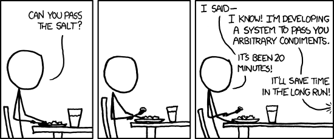
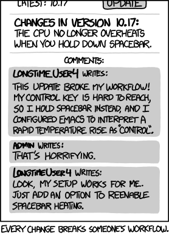

Welcome to The Multilingual Quantitative Biologist!#
“It is hard for me to say confidently that, after fifty more years of explosive growth of computer science, there will still be a lot of fascinating unsolved problems at peoples’ fingertips, that it won’t be pretty much working on refinements of well-explored things. Maybe all of the simple stuff and the really great stuff has been discovered. It may not be true, but I can’t predict an unending growth. I can’t be as confident about computer science as I can about biology. Biology easily has 500 years of exciting problems to work on, it’s at that level.”
—Donald Knuth
About#
These notes have emerged from the development of content for modules on Biological Computing taught in various past and present courses at the Department of Life Sciences, Imperial College London. These courses include Year 1 & 2 Computational Biostatistics modules at the South Kensington Campus, the Computational Ecology and Evolution MSc at the Silwood Park Campus, the Quantitative Methods in Ecology and Evolution Centre for Doctoral Training (QMEE CDT), and the training workshops of the VectorBiTE rCN and VBD Hub.
Different subsets of these notes will be covered in different courses. Please look up your respective course guidebooks/handbooks to determine when the modules covered in these notes are scheduled in your course. You will be given instructions about which sections are covered in your course.
The chapters include Jupyter notebooks and written pages. Many chapters are accompanied by data and code on which you can practice your skills in your own time and during practical sessions. These materials are available (and will be updated regularly) at a Git repository. We use Git for hosting this course’s materials because we want to version-control this course’s content, which is constantly evolving to keep up with changing programming/computing technologies. That is, we are treating this course as any computing project that needs to be regularly updated and improved. Changes to the notes and content will also be made based upon student feedback. Blackboard is just not set up to handle dynamic updating and version control of this sort!
If you do not use Git, you can download the code, data, notes, and other course materials from the repository: select Code, then Download ZIP. Unzip the archive to access the files you need.


Fig. 1 Solve the problem at hand before designing a general-purpose solution.
It is important that you work through the exercises and problems in each chapter. This document does not tell you every single thing you need to know to perform the exercises in it. In programming and computing, you learn faster by trying to solve problems (including computer crashes!) on your own, often by liberally googling the problem!
Learning goals#
The goal of these notes is to teach you to become (or at least show you the path towards becoming) a competent quantitative biologist. A large part of this involves learning computer programming. Why do biologists need to write computer programs? Here are some (hopefully compelling!) reasons:
Short of fieldwork, programs can do anything (that can be specified). In fact, even fieldwork, if you could one day program a robot to do it for you [1].
As such, no software is typically available to perform exactly the analysis you are planning. You should be unhappy if you are trying to shoehorn your data into methods that don’t quite seem right.
Biological problems and datasets are some of the most complicated imaginable. Programming permits success despite complexity through precise specification and modularization of complicated analyses.
Modularity – programming allows you to break up your complex analysis in smaller pieces, yet keep all the pieces in a single, functional analysis.
reproducibility – you (or someone else) can just re-run the code to reproduce your analysis. This is also the key to maintaining scientific accountability, integrity, and accuracy.
Organized thinking – writing code requires you to do this!
Career prospects – good, scientific coders are in short supply in all fields, but most definitely in biology!
Why Multilingual?#
There are several hundred programming languages currently available – which ones should a biologist choose? These notes are built on the philosophy that quantitative biologists can significantly benefit from being multilingual programmers, knowing:
A modern, easy-to-write, versatile, interpreted (or semi-compiled) language that is “reasonably” fast, like Python
Mathematical and statistical software with programming and graphing capabilities, like
RA compiled (or semi-compiled) ‘procedural’ language, like C
And all these because one language doesn’t fit all purposes. Something like C, the last item in the list above, is a “procedural” language that forces you to deal with the real “under the hood” workings of your computer (especially, memory management). Without an understanding of these ‘low-level’ aspects of computer programming, you will be limited in your ability to develop applications that either intrinsically require you to optimize performance, or need to be run in a memory- or performance-constrained environment (combination of computer hardware and operating system). Languages like Python and R abstract away many low-level details, trading some control over performance for ease of programming. However, they are sufficient for most research and industry programming tasks.
You will learn Python and R (along with Bash) on this course. We will not learn a lower-level language like C here, but it may be useful in some lines of research or industry jobs. Keep your mind open to learning another language as your work requires it!
R vs. Python#
We will use R mainly for data analysis and visualization. You can also do these tasks in Python; see the data analysis in Python appendix. Both languages have extensive packages for statistical analysis, visualization, and machine learning. R is especially common in statistics and academic research, while Python is a general-purpose language used across research and software development. Choose the tools that fit your question, collaborators, and existing workflow.
Some guidelines, conventions and rules#
Our goal is to teach you not just programming, but also good computing practices. In this course, you will write plenty of code, deal with different data files, and produce text and graphic outputs. You will learn to keep your project and coursework organized in logical, efficient, error-free, and reproducible workflows (that’s a mouthful, but an important mouthful).
Beware the dark forces#
You will NOT be using spreadsheet software (e.g., Excel) on this course. There are times when you will feel the pull of the dark side (ahem!), and imagine a more “comfortable” world where you are mouse-clicking your way happily though Excel-based data manipulations and analyses. NO! You will be doing yourself a disservice. On the long-ish run you will be much better off visualizing and manipulating data on your computer using a programming language like R. This is something you will learn, young padawan!
Keep your workflow organized#
In the following chapters, you will practice many examples where you are required to write large blocks of code. Please get into the habit of writing code into text files with an appropriate extension (e.g., .R for R code, .py for Python code). Keep your code files organized in a code directory. Similarly, some of these scripts will take data files as inputs and produce text or graphics. Keep inputs in data and outputs in results, as in this repository. Your instructor(s) will help you get set up and follow this workflow.


Fig. 2 Document your workflow so that small changes do not make it impossible to repeat.
Conventions used in this document#
Throughout these sessions, directory paths will be specified in UNIX (Mac, Linux) style, using / instead of the \ used in Windows. A path is the location of a file or folder. An absolute path gives the complete location; a relative path starts from the folder you are currently using. The exercises normally use relative paths because they keep working when a project folder is moved.
Commands and code snippets appear in blocks like this shell example, which prints your current directory:
pwd
Run examples in the relevant terminal or programming environment. Typing them out can help you learn the syntax, but whether you type or paste them, check what each command does and whether its output makes sense.
The prompt you see on your own terminal/console will vary with the environment: $ for a UNIX shell, >>> for Python, > for R, etc. Prompts are not part of the commands you type.
Also note that:
★ Lines starting with a star like this will be specific instructions for you to follow
And there will be notes, tips and warnings that you should pay particular attention to, which will appear like this:
Note
This is a note
Tip
This is a tip
Warning
This is a warning
So here’s your first (and perhaps most important) tip:
Tip
Finding solutions online. This document does not tell you every single thing you need to know to perform the exercises in it. In programming and computing, you learn by trying to solve problems yourself. Search the web when you need help:
Search for the main keywords along with the programming language name (e.g., “unix mv vs cp” or “R create empty dataframe”).
Check official documentation and relevant discussions on Stack Overflow or Stack Exchange. Votes can help you find useful answers, but check their dates and test the advice in your own environment.
There may be several solutions to the same problem. Understand an approach before using it, and look up unfamiliar terms such as “relative path” or “version control”.
To IDE or not to IDE?#
As you embark on your journey to becoming a competent practitioner of biological computing, you will be faced with a Hamletian question: “To IDE or not to IDE” (anagram alert!). OK, maybe not that dramatic or Hamletian…
An Integrated Development Environment (IDE) brings together a code editor and tools for tasks such as formatting, running and debugging code, inspecting variables, and using version control (e.g., Git).
You will benefit a lot if you use a code editor that can also offer an IDE. At the very least, your IDE should offer:
Auto-indentation
Automatic code wrapping (e.g., keeping lines <80 characters long)
Syntax highlighting (language elements such as variables, commands, and brackets are differently colored)
Code folding (fold large blocks of code, say an entire function or loop)
Keyboard control of commenting/uncommenting, code wrapping, etc.
Embedded terminal / shell / commandline console
Sending commands to terminal / shell
Debugging
If you use multiple programming languages, choose an editor that can handle them. We will use Visual Studio Code in this course because it is freely available and supports extensions for multilingual development; see VS Code for MQB for project, Python, notebook and R setup. Vim and Emacs are also powerful editors, though they can take more time to learn.
Gooey IDEs#
Many IDEs have graphical user interfaces (GUIs, or “gooeys”) with features such as data and plot views and package management. RStudio is a popular option with a strong focus on R. You can use a specialist tool alongside a multilingual editor; choose what works for your tasks.
Assessment#
Your computing coursework may be assessed. If you have been told that it will, please see this Appendix if you are a Masters student. If you are an Undergrad student, you may have a computer based test, the format for which will be explained to you elsewhere.
Footnotes